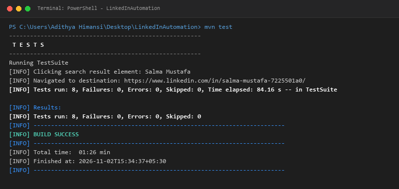

Faculty Of Computing
General Sir John Kotelawala Defence University
IT3153 – Software Quality Assurance (SQA) - Assignment 04
D/BIT/24/0022
This project automates selected user-interface checks on LinkedIn using Selenium WebDriver with Java and TestNG, managed through Maven. The tests focus on the login page, login scenarios, search functionality, and navigation from search results. Page classes separate page interactions from test methods following the Page Object Model (POM) architectural design pattern.
| Tool | Purpose |
|---|---|
| Java 17 | Programming language and test runtime environment. |
| Selenium WebDriver (4.29.0) | Browser automation and interaction with page elements. |
| TestNG (7.10.2) | Test methods, lifecycle integration, assertions, and test result reporting. |
| Apache Maven (3.9.9) | Dependency management and command-line test execution. |
| Chrome / ChromeDriver | Browser under test and automation driver running on Windows 11. |
The latest recorded Maven/TestNG run completed successfully. The aggregate counts below are taken from the project’s Surefire report (TestSuite.txt) and terminal output. The individual case descriptions reflect the implemented coverage; confirm case-level statuses against testng-results.xml before final submission.
| ID | Test case | Expected result | Status |
|---|---|---|---|
| TC-01 | Open LinkedIn login page | Login page loads with valid URL. | Pass |
| TC-02 | Verify login page title | Expected title “LinkedIn” is available. | Pass |
| TC-03 | Verify login form fields | Username, password, and sign-in controls are visible. | Pass |
| TC-04 | Login page opens in LoginTest | Login page is displayed and interactable. | Pass |
| TC-05 | Valid login | Login completion is detected and feed loads. | Pass |
| TC-06 | Invalid-password login | Invalid-credential feedback is detected. | Pass |
| TC-07 | Search “Software Testing” | Search results URL and visible result are detected. | Pass |
| TC-08 | Click first search result | Navigation to a result destination is verified. | Pass |
| Tests run | Failures | Errors | Skipped | Elapsed |
|---|---|---|---|---|
| 8 | 0 | 0 | 0 | 84.16 seconds |
The project separates browser setup in BaseTest, page interactions in LoginPage,
HomePage, and SearchPage, and assertions in test classes. This follows the
Page Object Model approach and helps reduce duplicated page-interaction code while improving maintainability.
CSS selectors and XPath expressions locate fields, buttons, and result links.
Explicit dynamic waits (WebDriverWait with ExpectedConditions) are used for all
element visibility, clickability, and URL navigation conditions rather than arbitrary static thread sleep.
BaseTest implements automated screenshot capture via Selenium’s TakesScreenshot
and responds to any test failure by attempting to capture the current browser window state. It creates a
screenshots/ directory and saves a timestamped PNG file. The handler is automatically invoked
during teardown if a test fails so that issues can be diagnosed quickly. Successful runs do not create
failure screenshots, avoiding unnecessary storage clutter.

id="_R_...") on login forms. Hardcoded ID locators were replaced with semantic CSS attribute selectors (input[type='email'], input[type='password'], button[type='submit']).element.isDisplayed()), Selenium triggers ElementNotInteractableException./checkpoint/ and pauses for manual user verification rather than attempting programmatic circumvention.Run tests only with an account you own or are authorized to use. Supply credentials through configuration files or environment variables rather than hard-coding them in test scripts. Do not commit sensitive credentials or session tokens to public source control. Review and redact screenshots if they expose personal information. Do not attempt to bypass CAPTCHA or automated security checkpoints.
The latest recorded test execution completed with eight tests run and no failures, errors, or skipped tests. The project successfully demonstrates browser setup and teardown, login-page checks, valid and invalid login scenarios, search-result verification, navigation checking, and failure screenshot support.